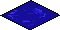

Move, press and release the mouse
Down
Move
Up
Out
TODOs
move scripts outside the html, have a js file
do the Global Offset stuff for map moving
do the water tile show at the correct location
do all point variables be dicts with x and y attributes